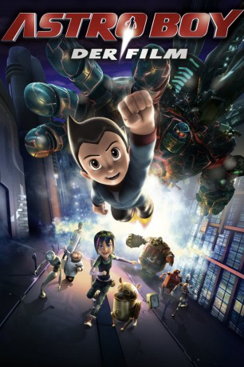

#616 Astro Boy
 
 IMDB-Wertung: 6.3 / 10
IMDB-Wertung: 6.3 / 10  Metascore: 53
Metascore: 53 
Nach dem Tod seines Sohnes entwickelt der Wissenschaftler Dr. Tenma einen Roboter mit Superkräften, der seinem Jungen sehr ähnlich sieht. Er wird damit aber auf Dauer nicht fertig und verstößt ihn. Damit beginnt für Astro Boy das größte Abenteuer seines Lebens.
Jahr: 2009
Dauer: 94 Minuten
FSK:
Land: Hong-Kong Studio: Concorde Home EntertainmentTonspuren: DTS - ,
Untertitel: Deutsch,
Auflösung: 1080p (1920x816) Größe: 4075 MB
Genre: Animation/Trick, Action, Komödie, Familie, Sci-Fi
Regisseur: David Bowers
Drehbuch: Osamu Tezuka, David Bowers, Timothy Harris, David Bowers
Soundtrack: John Ottman
Darsteller:
Datei: X:\Kinder Filme (A-F)\Astro Boy (2009, FSK, 1920x816).mkv seit 12.03.2015
Festplatte: Kinder-Filme+Trick
 Es gibt insgesamt 68 Filme in der Gruppe 'Kinder Filme (A-F)'
Es gibt insgesamt 68 Filme in der Gruppe 'Kinder Filme (A-F)'